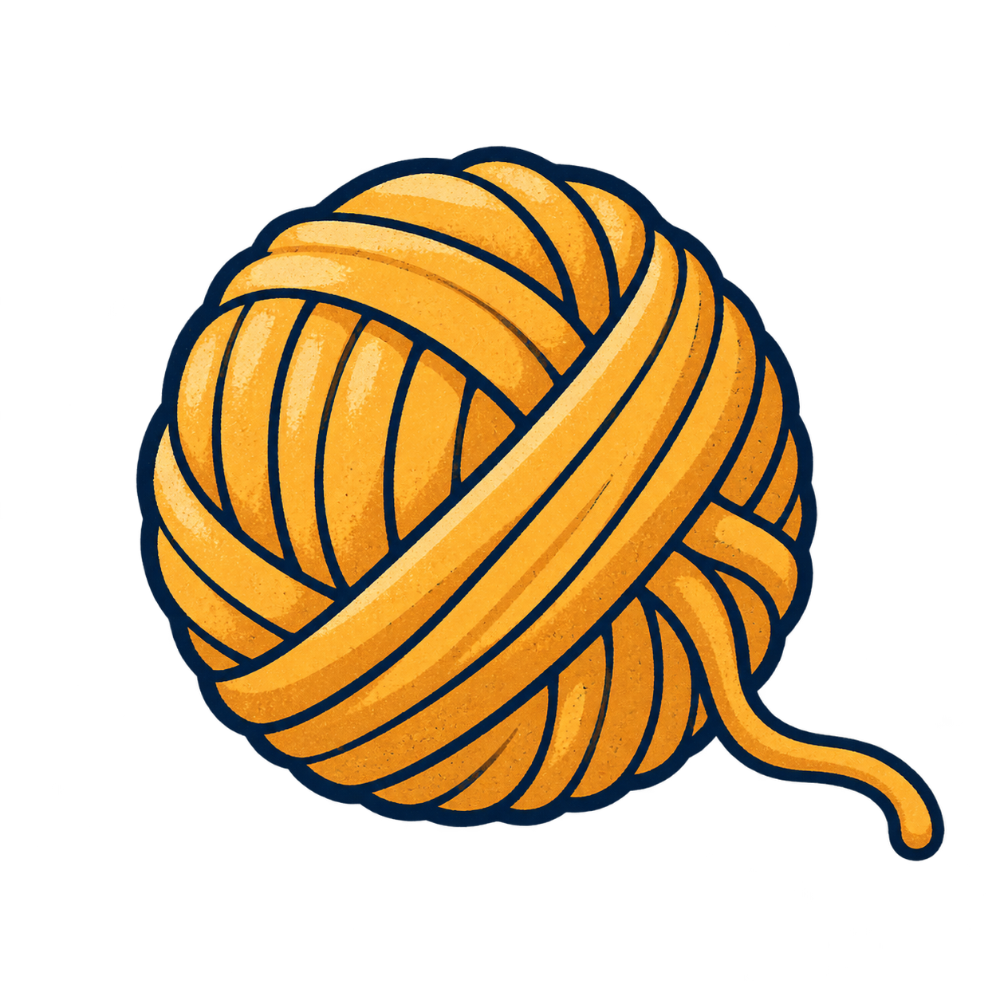

Игры с белым котом
Поиграем
дома.
Коробки нужно подвинуть.
Вещи пора расставить по полочкам.
А кот уже здесь.


50 уровней
Кот и коробки
Толкай лёгкие коробки на коврики, открывай дверь. Сначала тесная комната, потом задача посложнее.
Играть ↗Новый прототип
По полочкам
Клубки к клубкам, миски к мискам. Забирай крайний предмет и находи для него место.
Попробовать ↗